November to February: Winters are the best time to visit Allepey as the weather is mild and pleasant.Read More
Alleppey
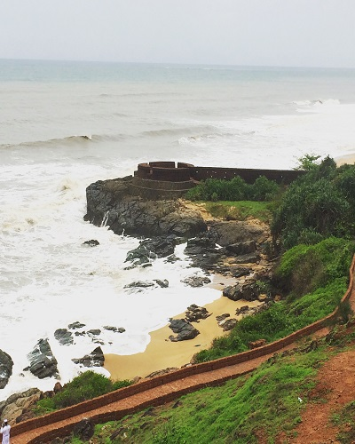
Bekal
The months from August to February with the cold and comfortable weather is the Best time to Visit Bekal.Read More
Bekal
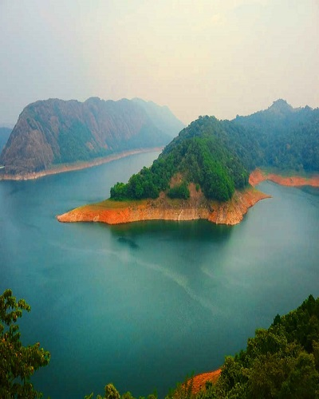
Idukki
Winter is undoubtedly the best time to visit Idukki! During this season, the entire of the hill station gets covered with the magical mist and showcases an irresistible charm.Read More
Idukki
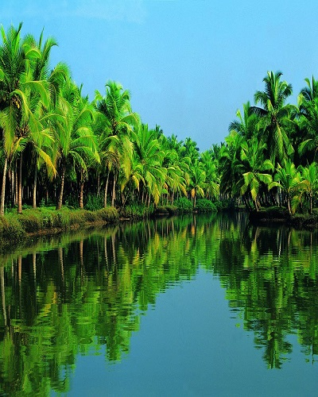
Kochi
October to February: Winters are by far the best time to visit Cochin as the weather is very pleasant.Read More
Kochi
Kollam
November and December (Winter) is the best time to visit Kollam because the temperature is relatively pleasant.Read More
Kollam
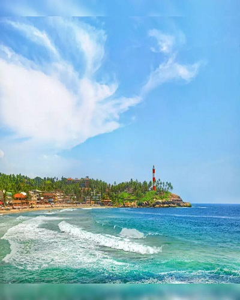
Kovalam
November to February: The winter season is by far the best time to visit Kovalam as the temperature is moderate and conducive for sightseeing.Read More
The best time to visit Kumarakom is between September and March.Read More
Kumarakom
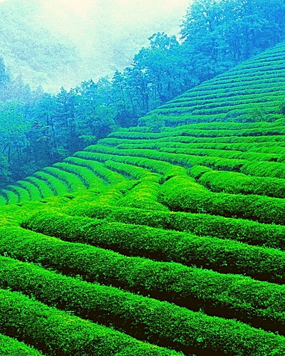
Munnar
December to February:The winter months are by far the best time to visit Munnar since the weather is pleasant. Read More
Munnar
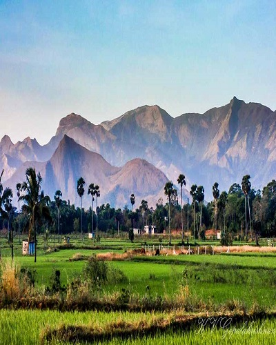
Palakkad
The best season to visit Palakkad is the winter season in the months of December to February. Read More
Palakkad
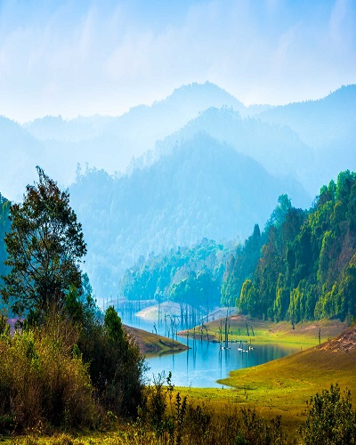
Periyar National Park
Periyar Wildlife Sanctuary and Tiger Reserve is one of those few wildlife vacation destinations which are open in monsoons too. You can visit Periyar in any season. The best time to visit Periyar is September to April.Read More
Periyar National Park
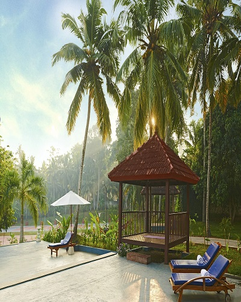
Poovar
The best season to visit Poovar is the winter season. The temperature remains comfortable and is apt for visiting the places of interest in Poovar. The best months to visit are October, November, December, January and February. Read More
Poovar
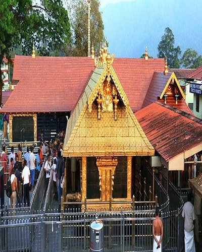
Sabarimala
Best Time To Visit Sabarimala :Summer (March - May) Read More
Sabarimala
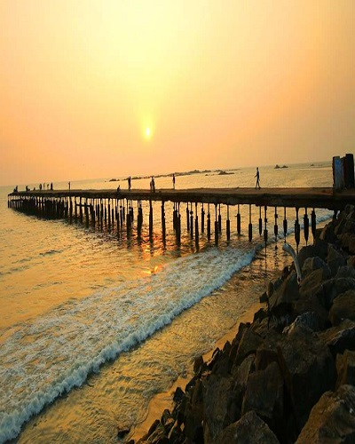
Thalassery
The best season to visit Thalassery is the winter season. The temperature remains comfortable and is apt for visiting the places of interest in Thalassery. The best months to visit are October, November, December, January, February and March.Read More
Thalassery
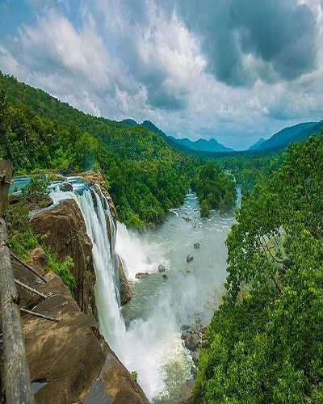
Thirssur
The best time to visit Thrissur is the season of winter when tourists will find the climate on the pleasant and enjoyable side.Read More
Thirssur
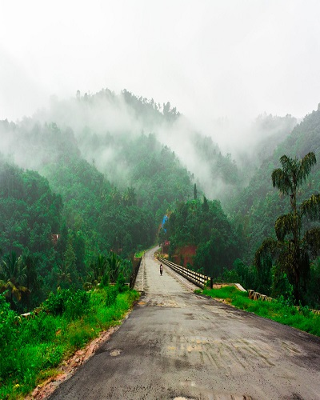
vagamon
Vagamon is an all-season destination but the best time is after the monsoons from June to September or before the summer from March to May.Read More
vagamon
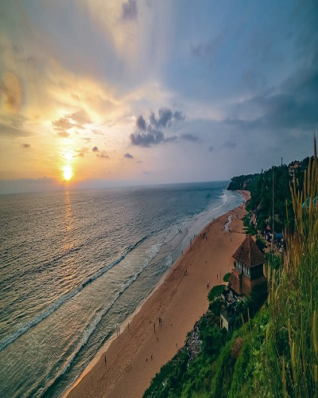
Varkala
Winters(October to February) are the best time to visit Varkala as the temperatures are relatively low and weather is pleasant.Read More
Varkala
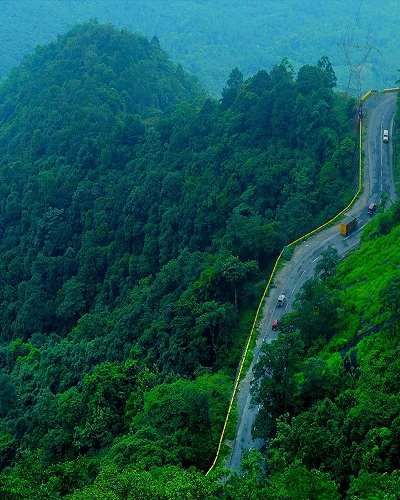
Wayanad
October to May is the best time to visit Wayanad. The times in between December to February are much cooler than the other months of the year with downfall of temperature up to 10°C.Read More